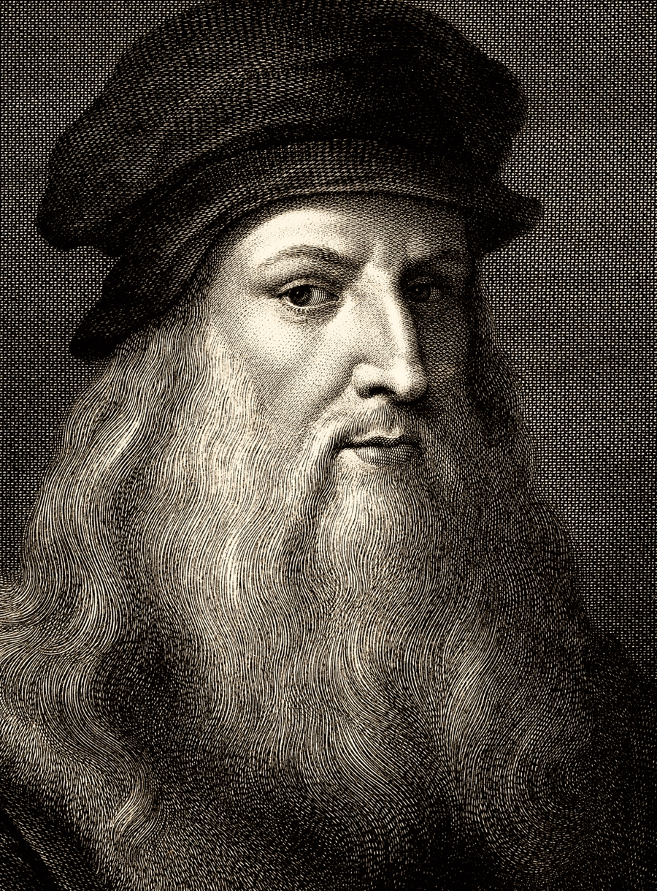

<h1>Leonardo da Vinci</h1>

Leonardo da Vinci era un erudito italiano que mostraba interés en disciplinas como la invención,
la ciencia, las matemáticas, la ingeniería, la anatomía, la geología, la astronomía,
la paleontología, la botanía y artes como el dibujo, la pintura, la literatura, la esculptura y
la arquitectura.